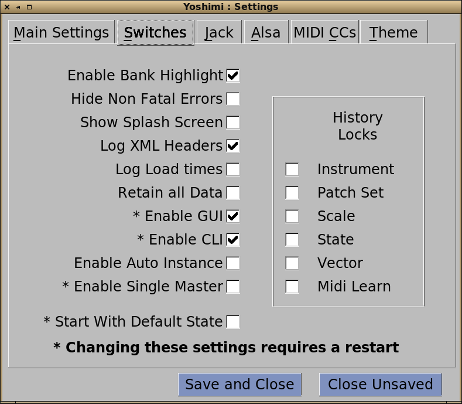
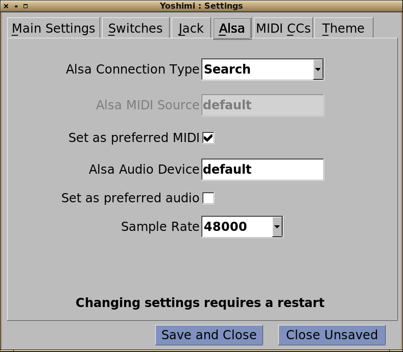
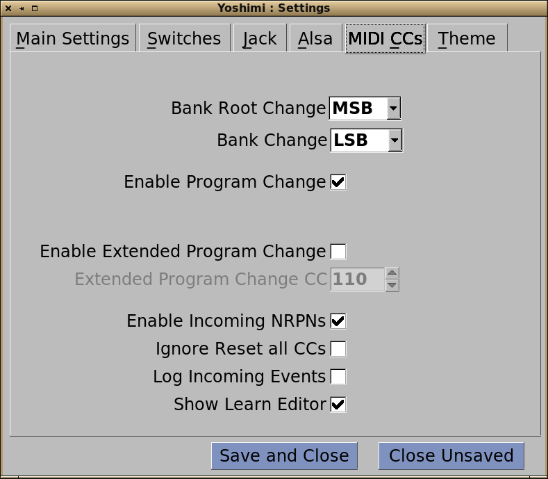

Some of these settings don't apply when running as an LV2 plugin, and mostly these are either hidden completely or shown as inactive.
Main Settings
AddSynth Oscillator Size The bigger this is the better the quality. However that is at the cost of CPU loading.
Internal Buffer Size Lower values will give lower latency and more accurate resolution, but at the cost of CPU loading. We recommend you keep this as low as possible without getting Xruns.
PADsynth Interpolation For those with good hearing at high pitches, setting this to 'Cubic' will give very slightly better results, but it is slower to operate.
Virtual Keyboard Layout You can have various standard layouts, when using the virtual keyboard, and this lets you select the most common.
XML Compression Level The degree of compression applied to saved data. Zero is useful for creating files readable in a text editor when checking for problems.
Send Reports to: Various text messages are created when Yoshimi is running. These can either be sent to a GUI Console window or to the standard command line output.
Saved Instrument Format Yoshimi instrument files can be saved to the original ZynAddSubFX format, the new extended Yoshimi format, or to both of them.
Mixer Panel Layout Depending of how you like to lay out your desktop you may want the default single row of 16 parts, or the more compact two rows of 8.

Switches
Enable Bank Highlight This will highlight the last Instrument loaded from or saved to a bank. The highight is retained through later bank changes, so you can still find the last one you handled. It will be lost though if you load an external file or patchset.
Start With Default State If a default state has been set this will be loaded on all startups and main resets.
Hide Non Fatal Errors Suppresses reporting of errors that aren't serious. This is especially useful for CLI users.
Show Splash Screen Enables or disables showing the startup splash screen. If disabled, then a very small message window is shown briefly so you know Yoshini has started.
Log Load Times Reports the time it took for an instrument to load, regardless of whether it was loaded externally, from a bank, or via MIDI. This helps you time dynamic loading in a running project.
Log XML Headers Reports an instrument's version number on loading. Both the ZynAddsubFX and Yoshimi numbers are displayed depending on whether it is an unedited original, a modifed one or generated in Yoshimi from the start.
Include all data in XML files Originally, some data was not stored in ZynAddSubFX instruments. This meant there were sometimes subtle differences in the sound each time the instrument was loaded. This switch ensures all date is stored.
Enable GUI Enable CLI
These two switches detirmine which interfaces are active. You can deselect both, but in that case the only form of access to Yoshimi will be via MIDI.
Enable Auto Instance If this is enabled, then when you start Yoshimi, all instances that were open when it was last saved will be re-opened.
Enable Single Master If this is set, and you try to start a second copy of Yoshimi, then instead you will get a new instance from the running one.
History Locks
All of these recent file lists can be locked so that their respective entries will not be moved or changed when you load or save new files of that type.
This is useful when using MIDI NRPNs to load files numerically via a remote keyboard/controller.
Jack
Jack MIDI Source This can be set if you know the name of a source you want to connect to, but usually it is left empty and connection made from the sender.
Set as preferred MIDI As described, sets this for MIDI input (disabling Alsa MIDI).
Jack Server It is possible to set a specific server if there is more than one active, but this is most unusual, so it is nomally left as 'default'
Set as prefered audio Sets Jack for aoudio output, disabling access to Alsa audio
Autoconnect audio Connects to the current audio server when Yoshimi is started.

Alsa
Alsa Connection Type By default sets 'Search' and will accept input from any Alsa sources it can find. Alternatively it can be set as 'Fixed, when you can use the option below. Finally it can be switched off, and connectin is then made externally.
Alsa MIDI Source Used to set a comma separated list of sources you want to connect to.
Set as preferred MIDI Enables Alsa MIDI, disabling Jack input.
Alsa Audio Device The Alsa audio destination you want to connect to. If you don't set this Alsa will take over and set most of these parameters to 'safe' values.
Set as preferred audio Enables Alsa audio output, disabling connection to Jack.
Sample Rate Specific to Alsa, only a limited range of rates are supported - all the usual ones for high quality audio.

MIDI
Bank Root ChangeBank Change
This pair of controls detirmine how Yoshimi responds to MIDI bank changes. Normally the Bank Root will be MSB (CC0) and Bank will be LSB (CC32), however some older hardware has these reversed. Also some devices send spurious changes, so not only can you swap them, you can also completely disable acting on them.
Enable Program Change Detirmines whether you want to allow Progam/Instrument changes via MIDI.
Enable Part On Program Change Having this set will activate a part if it is not active when it receives a program change message.
Enable Extended Program Change This lets you set a specific CC that will then perform program changes on the upper 32 instruments in a bank.
Extended Program Change CC The is the actual CC to use for extended program changes. The value sent should be the Instrument number minus 128.
Enable Incoming NRPNs Enables/Disables receiving NRPNs, but doesn't affect Vectors or MIDI Learn which are always available.
Ignore Reset all CCs Some devices send this command at inconvenient times, so, you can disable acting on it.
Log Incoming Events Reports the CC being received. Useful when your'e not sure what (if anything) is being sent.
Show learn Editor If set, then on learning a control, or loading a state file that has learned entries, the MIDI Learn editing window will be opened.
Back to top